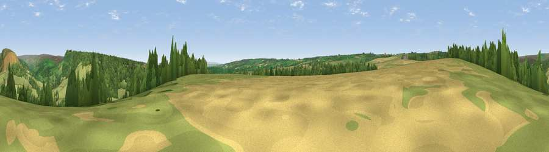

Viewpoint near Hawnby
#31850 in England · top 72% of its area beats it · near HawnbyThe view, rendered

A 360° render of this exact spot computed from the terrain model, tree cover and land cover — summer colours, afternoon light, calibrated against photographs of famous viewpoints. Real trees, hedges and buildings will differ in detail.
The panorama
Grey silhouette: terrain skyline in each direction (720 bearings, Earth curvature and refraction included). Dashed green: skyline with trees (+15 m) and buildings (+8 m) as obstacles. Blue strip: how far the ground is visible on each bearing.
Where the view opens
Wedge length = distance to the farthest visible ground on that bearing (vegetation-aware). Rings at 10, 25 and 50 km.
What fills the view
53% grassland · 45% woodland · 2% cropland
Angular shares of the visible panorama (visual magnitude), not map area. Landscape diversity 0.35 (0–1 Shannon).
Key numbers
More beautiful places nearby
The staircase of upgrades: each row has a higher view potential than everything closer. Driving times are estimates from straight-line distance, calibrated against real road routing — check an actual route before setting out.
| Place | Direction | Drive | Score |
|---|---|---|---|
| Viewpoint near Hawnby | NE · 2 km | ~5 min | 44.1 |
| Viewpoint near Hawnby | NE · 2 km | ~6 min | 47.4 |
| Easterside Hill | N · 3 km | ~6 min | 68.0 |
| Rievaulx Moor | NE · 4 km | ~9 min | 69.0 |
| Viewpoint near Carlton | ENE · 4 km | ~10 min | 69.1 |
| Viewpoint near Boltby | W · 5 km | ~10 min | 71.6 |
| Viewpoint near Boltby | WSW · 5 km | ~10 min | 75.7 |
| Viewpoint near Boltby | WSW · 5 km | ~11 min | 79.6 |
54.28623, -1.15319 · source: screening · position refined by local search. Computed location — check access rights before visiting.